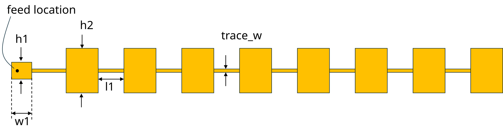
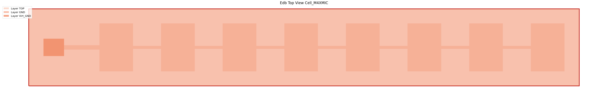
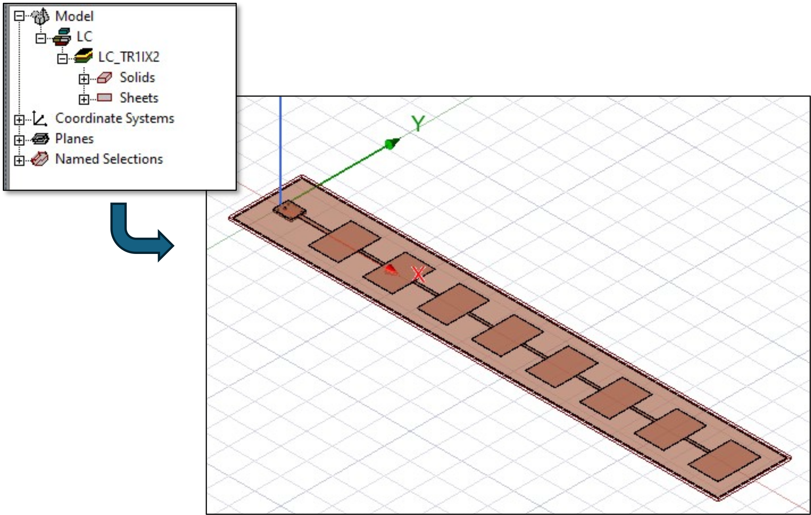
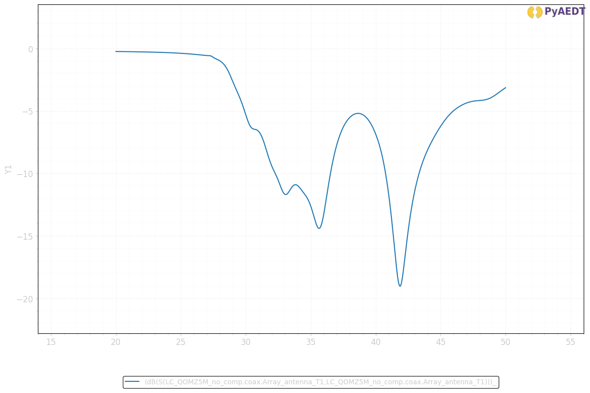
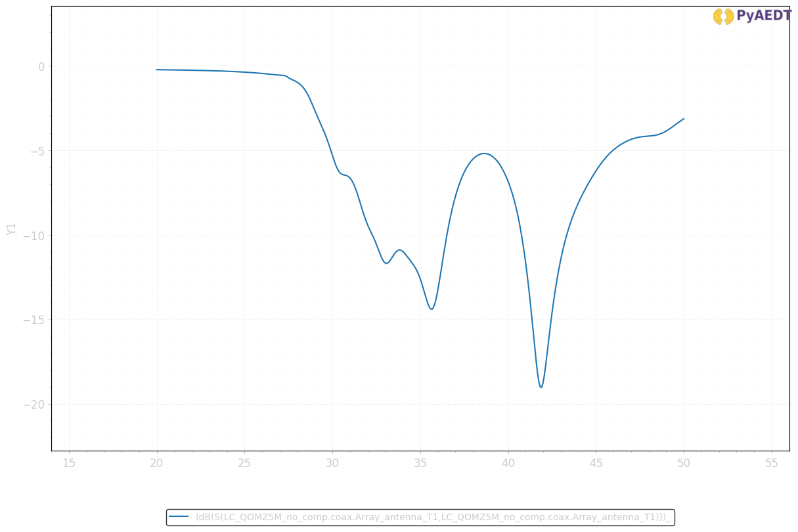
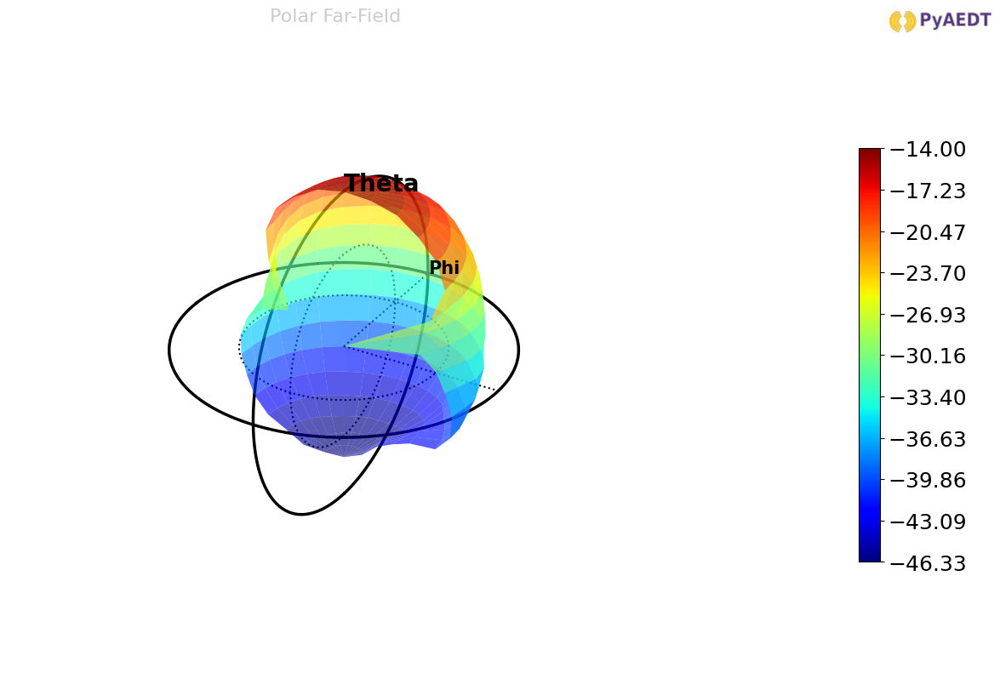

Download this example
Download this example as a Jupyter Notebook or as a Python script.
EDB: Layout Components#
This example shows how you can use EDB to create a parametric component using 3D Layout and use it in HFSS 3D.
Prerequisites#
Perform imports#
[1]:
import os
import tempfile
import time
import ansys.aedt.core
import pyedb
Define constants#
Constants help ensure consistency and avoid repetition throughout the example.
[2]:
AEDT_VERSION = "2025.2"
NG_MODE = False # Open AEDT UI when it is launched.
Create temporary directory#
Create a temporary working directory. The name of the working folder is stored in temp_folder.name.
Note: The final cell in the notebook cleans up the temporary folder. If you want to retrieve the AEDT project and data, do so before executing the final cell in the notebook.
[3]:
temp_folder = tempfile.TemporaryDirectory(suffix=".ansys")
Model Preparation#
Create primitive data classes to simplify geometry creation#
The Line, Patch and Array classes wrap geometry operations and properties into simple Python classes that help simplify the creation of the microstrip array with the pyedb.Edb class.
[4]:
class Patch:
def __init__(self, width=0.0, height=0.0, position=0.0):
self.width = width
self.height = height
self.position = position
@property
def points(self):
return [
[self.position, "-{}/2".format(self.height)],
["{} + {}".format(self.position, self.width), "-{}/2".format(self.height)],
["{} + {}".format(self.position, self.width), "{}/2".format(self.height)],
[self.position, "{}/2".format(self.height)],
]
class Line:
def __init__(self, length=0.0, width=0.0, position=0.0):
self.length = length
self.width = width
self.position = position
@property
def points(self):
return [
[self.position, "-{}/2".format(self.width)],
["{} + {}".format(self.position, self.length), "-{}/2".format(self.width)],
["{} + {}".format(self.position, self.length), "{}/2".format(self.width)],
[self.position, "{}/2".format(self.width)],
]
class LinearArray:
def __init__(self, nb_patch=1, array_length=10e-3, array_width=5e-3):
self.nbpatch = nb_patch
self.length = array_length
self.width = array_width
@property
def points(self):
return [
[-1e-3, "-{}/2-1e-3".format(self.width)],
["{}+1e-3".format(self.length), "-{}/2-1e-3".format(self.width)],
["{}+1e-3".format(self.length), "{}/2+1e-3".format(self.width)],
[-1e-3, "{}/2+1e-3".format(self.width)],
]
Launch EDB#
The pyedb.Edb class can be used open an existing Edb instance or instantiate a new EDB project.
[5]:
aedb_path = os.path.join(temp_folder.name, "linear_array.aedb")
# Create an instance of the Edb class.
edb = pyedb.Edb(edbpath=aedb_path, version=AEDT_VERSION)
PyEDB INFO: Star initializing Edb 06:21:00.142650
PyEDB INFO: Edb version 2025.2
PyEDB INFO: Logger is initialized. Log file is saved to C:\Users\ansys\AppData\Local\Temp\pyedb_ansys.log.
PyEDB INFO: legacy v0.71.0
PyEDB INFO: Python version 3.10.11 (tags/v3.10.11:7d4cc5a, Apr 5 2023, 00:38:17) [MSC v.1929 64 bit (AMD64)]
PyEDB INFO: create_edb completed in 9.0403 seconds.
PyEDB INFO: EDB C:\Users\ansys\AppData\Local\Temp\tmpmy5eleig.ansys\linear_array.aedb created correctly.
PyEDB INFO: EDB initialization completed in 10.8196 seconds.
Build the stackup#
[6]:
layers = {
"materials": {"copper_high_cond": {"conductivity": 60000000}},
"layers": {
"TOP": {"type": "signal", "thickness": "35um", "material": "copper_high_cond"},
"Substrat": {"type": "dielectric", "thickness": "0.5mm", "material": "Duroid (tm)"},
"GND": {"type": "signal", "thickness": "35um", "material": "copper"},
"Gap": {"type": "dielectric", "thickness": "0.05mm", "material": "Air"},
"Virt_GND": {"type": "signal", "thickness": "35um", "material": "copper"},
},
}
edb.stackup.load(layers)
[6]:
True
Create a patch antenna and feed line#
Instances of the Patch and Lineclasses are used to define the geometry. These classes provide for parameterization of the array layout.

Define parameters:
[7]:
edb["w1"] = 1.4e-3
edb["h1"] = 1.2e-3
edb["initial_position"] = 0.0
edb["l1"] = 2.4e-3
edb["trace_w"] = 0.3e-3
first_patch = Patch(width="w1", height="h1", position="initial_position")
edb.modeler.create_polygon(first_patch.points, "TOP", net_name="Array_antenna")
first_line = Line(length="l1", width="trace_w", position=first_patch.width)
edb.modeler.create_polygon(first_line.points, "TOP", net_name="Array_antenna")
[7]:
<pyedb.dotnet.database.edb_data.primitives_data.EdbPolygon at 0x27e02bdf340>
Now use the LinearArray class to create the array.
[8]:
edb["w2"] = 2.29e-3
edb["h2"] = 3.3e-3
edb["l2"] = 1.9e-3
edb["trace_w2"] = 0.2e-3
patch = Patch(width="w2", height="h2")
line = Line(length="l2", width="trace_w2")
linear_array = LinearArray(nb_patch=8, array_width=patch.height)
current_patch = 1
current_position = "{} + {}".format(first_line.position, first_line.length)
while current_patch <= linear_array.nbpatch:
patch.position = current_position
edb.modeler.create_polygon(patch.points, "TOP", net_name="Array_antenna")
current_position = "{} + {}".format(current_position, patch.width)
if current_patch < linear_array.nbpatch:
line.position = current_position
edb.modeler.create_polygon(line.points, "TOP", net_name="Array_antenna")
current_position = "{} + {}".format(current_position, line.length)
current_patch += 1
linear_array.length = current_position
Add the ground conductor.
[9]:
edb.modeler.create_polygon(linear_array.points, "GND", net_name="GND")
[9]:
<pyedb.dotnet.database.edb_data.primitives_data.EdbPolygon at 0x27e02bdff10>
Add the connector pin to use to assign the port.
[10]:
edb.padstacks.create(padstackname="Connector_pin", holediam="100um", paddiam="0", antipaddiam="200um")
con_pin = edb.padstacks.place(
["{}/4.0".format(first_patch.width), 0],
"Connector_pin",
net_name="Array_antenna",
fromlayer="TOP",
tolayer="GND",
via_name="coax",
)
PyEDB INFO: Padstack Connector_pin create correctly
Add a connector ground.
[11]:
edb.modeler.create_polygon(first_patch.points, "Virt_GND", net_name="GND")
edb.padstacks.create("gnd_via", "100um", "0", "0")
edb["via_spacing"] = 0.2e-3
con_ref1 = edb.padstacks.place(
[
"{} + {}".format(first_patch.points[0][0], "via_spacing"),
"{} + {}".format(first_patch.points[0][1], "via_spacing"),
],
"gnd_via",
fromlayer="GND",
tolayer="Virt_GND",
net_name="GND",
)
con_ref2 = edb.padstacks.place(
[
"{} + {}".format(first_patch.points[1][0], "-via_spacing"),
"{} + {}".format(first_patch.points[1][1], "via_spacing"),
],
"gnd_via",
fromlayer="GND",
tolayer="Virt_GND",
net_name="GND",
)
con_ref3 = edb.padstacks.place(
[
"{} + {}".format(first_patch.points[2][0], "-via_spacing"),
"{} + {}".format(first_patch.points[2][1], "-via_spacing"),
],
"gnd_via",
fromlayer="GND",
tolayer="Virt_GND",
net_name="GND",
)
con_ref4 = edb.padstacks.place(
[
"{} + {}".format(first_patch.points[3][0], "via_spacing"),
"{} + {}".format(first_patch.points[3][1], "-via_spacing"),
],
"gnd_via",
fromlayer="GND",
tolayer="Virt_GND",
net_name="GND",
)
PyEDB INFO: Padstack gnd_via create correctly
Define the port.
[12]:
edb.padstacks.set_solderball(con_pin, "Virt_GND", isTopPlaced=False, ballDiam=0.1e-3)
port_name = edb.padstacks.create_coax_port(con_pin)
Display the model using the Edb.nets.plot() method.
[13]:
edb.nets.plot()

PyEDB INFO: Plot Generation time 0.523
[13]:
(<Figure size 6000x3000 with 1 Axes>,
<Axes: title={'center': 'Edb Top View Cell_M4XMIC'}>)
The EDB is complete. Now close the EDB and import it into HFSS as a “Layout Component”.
[14]:
edb.save_edb()
edb.close_edb()
print("EDB saved correctly to {}. You can import in AEDT.".format(aedb_path))
PyEDB INFO: Save Edb file completed in 0.0078 seconds.
PyEDB INFO: Close Edb file completed in 0.0139 seconds.
EDB saved correctly to C:\Users\ansys\AppData\Local\Temp\tmpmy5eleig.ansys\linear_array.aedb. You can import in AEDT.
C:\Users\ansys\AppData\Local\Temp\ipykernel_4440\2404789308.py:1: DeprecationWarning: Call to deprecated function save_edb. use save method instead.
edb.save_edb()
C:\Users\ansys\AppData\Local\Temp\ipykernel_4440\2404789308.py:2: DeprecationWarning: Call to deprecated function close_edb. use close method instead.
edb.close_edb()
Open the component in Electronics Desktop#
First create an instance of the pyaedt.Hfss class. If you set > ``non_graphical = False
then AEDT user interface will be visible after the following cell is executed. It is now possible to monitor the progress in the UI as each of the following cells is executed. All commands can be run without the UI by changing the value of non_graphical.
[15]:
h3d = ansys.aedt.core.Hfss(
project="Demo_3DComp",
design="Linear_Array",
version=AEDT_VERSION,
new_desktop=True,
non_graphical=NG_MODE,
close_on_exit=True,
solution_type="Terminal",
)
PyAEDT INFO: Python version 3.10.11 (tags/v3.10.11:7d4cc5a, Apr 5 2023, 00:38:17) [MSC v.1929 64 bit (AMD64)].
PyAEDT INFO: PyAEDT version 0.26.dev0.
PyAEDT INFO: Initializing new Desktop session.
PyAEDT INFO: AEDT version 2025.2.
PyAEDT INFO: New AEDT session is starting on gRPC port 53875.
PyAEDT INFO: Starting new AEDT gRPC session on port 53875.
PyAEDT INFO: Launching AEDT server with gRPC transport mode: wnua
PyAEDT INFO: Electronics Desktop started on gRPC port 53875 after 11.4 seconds.
PyAEDT INFO: AEDT installation Path C:\Program Files\ANSYS Inc\v252\AnsysEM
PyAEDT INFO: Connected to AEDT gRPC session on port 53875.
PyAEDT WARNING: Service Pack is not detected. PyAEDT is currently connecting in Insecure Mode.
PyAEDT WARNING: Please download and install latest Service Pack to use connect to AEDT in Secure Mode.
PyAEDT INFO: Project Demo_3DComp has been created.
PyAEDT INFO: Added design 'Linear_Array' of type HFSS.
PyAEDT INFO: AEDT objects correctly read
Set units to mm.
[16]:
h3d.modeler.model_units = "mm"
PyAEDT INFO: Modeler class has been initialized! Elapsed time: 0m 0sec
Import the EDB as a 3D component#
The linear array can be imported into the 3D CAD interface of HFSS. The ability to combine layout components with 3D components enables mesh fusion and is very useful for building and simulating large assemblies.
The following image shows the 3D layout component in the 3D CAD UI of HFSS.

[17]:
component = h3d.modeler.insert_layout_component(aedb_path, parameter_mapping=True)
PyAEDT INFO: No EDB gRPC setting provided. Disabling gRPC for EDB.
PyAEDT INFO: Loading EDB with Dotnet enabled.
PyEDB INFO: Star initializing Edb 06:21:53.227049
PyEDB INFO: Edb version 2025.2
PyEDB INFO: Logger is initialized. Log file is saved to C:\Users\ansys\AppData\Local\Temp\pyedb_ansys.log.
PyEDB INFO: legacy v0.71.0
PyEDB INFO: Python version 3.10.11 (tags/v3.10.11:7d4cc5a, Apr 5 2023, 00:38:17) [MSC v.1929 64 bit (AMD64)]
PyEDB INFO: Database linear_array.aedb Opened in 2025.2
PyEDB INFO: Cell Cell_M4XMIC Opened
PyEDB INFO: Builder was initialized.
PyEDB INFO: open_edb completed in 0.0229 seconds.
PyEDB INFO: EDB initialization completed in 0.0478 seconds.
PyEDB INFO: Close Edb file completed in 0.0000 seconds.
PyAEDT INFO: Parsing C:\Users\ansys\AppData\Local\Temp\pytest-of-ansys\pytest-2166\Demo_3DComp.aedt.
PyAEDT INFO: File C:\Users\ansys\AppData\Local\Temp\pytest-of-ansys\pytest-2166\Demo_3DComp.aedt correctly loaded. Elapsed time: 0m 0sec
PyAEDT INFO: aedt file load time 0.019558191299438477
PyAEDT INFO: Loading EDB with Dotnet enabled.
PyEDB INFO: Star initializing Edb 06:21:56.729908
PyEDB INFO: Edb version 2025.2
PyEDB INFO: Logger is initialized. Log file is saved to C:\Users\ansys\AppData\Local\Temp\pyedb_ansys.log.
PyEDB INFO: legacy v0.71.0
PyEDB INFO: Python version 3.10.11 (tags/v3.10.11:7d4cc5a, Apr 5 2023, 00:38:17) [MSC v.1929 64 bit (AMD64)]
PyEDB WARNING: AEDT project-related file C:\Users\ansys\AppData\Local\Temp\pytest-of-ansys\pytest-2166\Demo_3DComp.aedb\LayoutComponents\linear_array0\linear_array0.aedt.lock exists and may need to be deleted before opening the EDB in HFSS 3D Layout.
PyEDB INFO: Database linear_array0.aedb Opened in 2025.2
PyEDB INFO: Cell Cell_M4XMIC Opened
PyEDB INFO: Builder was initialized.
PyEDB INFO: open_edb completed in 0.0263 seconds.
PyEDB INFO: EDB initialization completed in 0.0420 seconds.
Expose the component parameters#
If a layout component is parametric, you can expose and change parameters in HFSS
[18]:
component.parameters
w1_name = "{}_{}".format("w1", h3d.modeler.user_defined_component_names[0])
h3d[w1_name] = 0.0015
Radiation Boundary Assignment#
The 3D domain includes the air volume surrounding the antenna. This antenna will be simulted from 20 GHz - 50 GHz.
A “radiation boundary” will be assigned to the outer boundaries of the domain. This boundary should be roughly one quarter wavelength away from the radiating structure:
[19]:
h3d.modeler.fit_all()
h3d.modeler.create_air_region(2.8, 2.8, 2.8, 2.8, 2.8, 2.8, is_percentage=False)
h3d.assign_radiation_boundary_to_objects("Region")
PyAEDT INFO: Boundary Radiation Rad__BXRP6O has been created.
[19]:
Rad__BXRP6O
Set up analysis#
The finite element mesh is adapted iteratively. The maximum number of adaptive passes is set using the MaximumPasses property. This model converges such that the \(S_{11}\) is independent of the mesh. The default accuracy setting is:
[20]:
setup = h3d.create_setup()
setup.props["Frequency"] = "20GHz"
setup.props["MaximumPasses"] = 10
Specify properties of the frequency sweep:
[21]:
sweep1 = setup.add_sweep(name="20GHz_to_50GHz")
sweep1.props["RangeStart"] = "20GHz"
sweep1.props["RangeEnd"] = "50GHz"
sweep1.update()
[21]:
True
Solve the project
[22]:
h3d.analyze()
PyAEDT INFO: Project Demo_3DComp Saved correctly
PyAEDT INFO: Solving all design setups. Analysis started...
PyAEDT INFO: Design setup None solved correctly in 0.0h 4.0m 20.0s
[22]:
True
Plot results outside AEDT#
Plot results using Matplotlib.
[23]:
trace = h3d.get_traces_for_plot()
solution = h3d.post.get_solution_data(trace[0])
solution.plot()
PyAEDT INFO: Parsing C:\Users\ansys\AppData\Local\Temp\pytest-of-ansys\pytest-2166\Demo_3DComp.aedt.
PyAEDT INFO: File C:\Users\ansys\AppData\Local\Temp\pytest-of-ansys\pytest-2166\Demo_3DComp.aedt correctly loaded. Elapsed time: 0m 0sec
PyAEDT INFO: aedt file load time 0.03979635238647461
PyAEDT INFO: PostProcessor class has been initialized! Elapsed time: 0m 0sec
PyAEDT INFO: PostProcessor class has been initialized! Elapsed time: 0m 0sec
PyAEDT INFO: Post class has been initialized! Elapsed time: 0m 0sec
PyAEDT INFO: Solution Correctly loaded. Elapsed time: 0m 0sec
PyAEDT INFO: Solution Correctly parsed. Elapsed time: 0m 0sec
[23]:


Plot far fields in AEDT#
Plot radiation patterns in AEDT.
[24]:
variations = {}
variations["Freq"] = ["20GHz"]
variations["Theta"] = ["All"]
variations["Phi"] = ["All"]
h3d.insert_infinite_sphere(name="3D")
new_report = h3d.post.reports_by_category.far_field("db(RealizedGainTotal)", h3d.nominal_adaptive, "3D")
new_report.variations = variations
new_report.primary_sweep = "Theta"
new_report.create("Realized2D")
[24]:
True
Plot far fields in AEDT#
Plot radiation patterns in AEDT
[25]:
new_report.report_type = "3D Polar Plot"
new_report.secondary_sweep = "Phi"
new_report.create("Realized3D")
[25]:
True
Plot far fields outside AEDT#
Plot radiation patterns outside AEDT
[26]:
solutions_custom = new_report.get_solution_data()
solutions_custom.plot_3d()
PyAEDT INFO: Solution Correctly loaded. Elapsed time: 0m 0sec
PyAEDT INFO: Solution Correctly parsed. Elapsed time: 0m 0sec
[26]:
Class: ansys.aedt.core.visualization.plot.matplotlib.ReportPlotter

Plot E Field on nets and layers#
Plot E Field on nets and layers in AEDT
[27]:
h3d.post.create_fieldplot_layers_nets(
[["TOP", "Array_antenna"]],
"Mag_E",
intrinsics={"Freq": "20GHz", "Phase": "0deg"},
plot_name="E_Layers",
)
PyAEDT INFO: Active Design set to Linear_Array
[27]:
Class: ansys.aedt.core.visualization.post.field_data.FieldPlot
Finish#
Save the project#
[28]:
h3d.save_project(os.path.join(temp_folder.name, "test_layout.aedt"))
h3d.release_desktop()
# Wait 3 seconds to allow AEDT to shut down before cleaning the temporary directory.
time.sleep(3)
PyAEDT INFO: Project test_layout Saved correctly
PyEDB INFO: Close Edb file completed in 0.0134 seconds.
PyAEDT INFO: Desktop has been released and closed.
Clean up#
All project files are saved in the folder temp_folder.name. If you’ve run this example as a Jupyter notebook, you can retrieve those project files. The following cell removes all temporary files, including the project folder.
[29]:
temp_folder.cleanup()
Download this example
Download this example as a Jupyter Notebook or as a Python script.